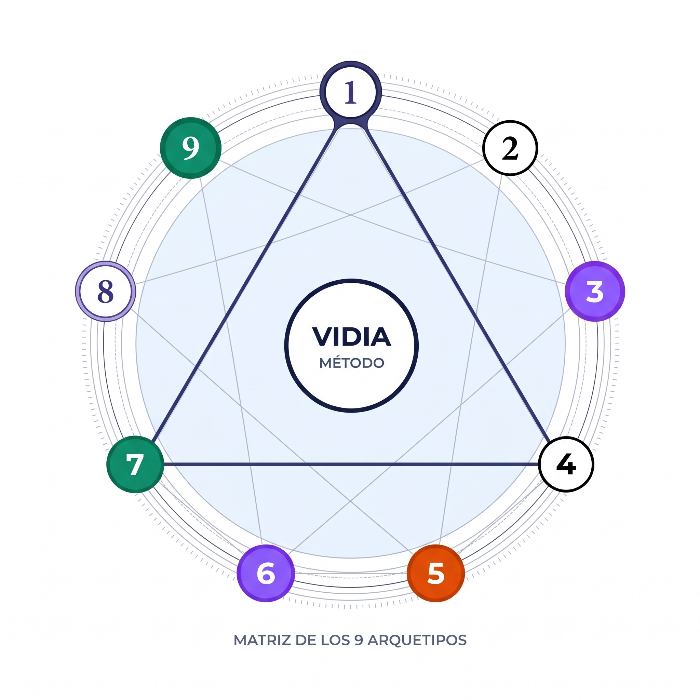

MANUAL VIDIA DE NUMEROLOGÍA PITAGÓRICA
La Arquitectura Matemática del Ser y la Dinámica de los Ciclos Vitales

«Los números no son símbolos mudos ni meras cantidades aritméticas; son condensadores de frecuencias vibratorias y acordes biográficos que organizan el despliegue del alma humana en el tiempo». — Sarah Joanna Dennis (L. Dow Balliett)
El Mapa no es el Destino; es la Partitura
Bienvenido al Manual Vidia de Numerología Pitagórica Integral. Este compendio ha sido diseñado no como un oráculo determinista de predicciones mecánicas, sino como una guía técnica de alta precisión biométrica. Siguiendo la rigurosa tradición clínica desarrollada durante más de cuatro décadas en California por la Dra. Juno Jordan, cada número obtenido en una carta natal representa una fuerza funcional verificable en la conducta, los bloqueos inconscientes y las oportunidades temporales del individuo.
Tanto si abordas este manual para afinar tu autoconocimiento como si buscas profesionalizar tu consulta clínica, encontrarás un método científico estandarizado: reglas no arbitrarias para la reducción teosófica, discernimiento acústico exacto del alfabeto hispano y un modelo de integración en tres dimensiones que unifica la psicología profunda con la aritmética del tiempo.
Elige si deseas exportar el manual en su totalidad o imprimir este índice general sin gastar tinta innecesaria.
Índice General de Contenidos
Explora los módulos estructurados de la formación correlativa. Puedes acceder a la lectura interactiva de cada capítulo disponible:
Filosofía Pitagórica, Historia y Acústica del Sonido
De la física del monocordio de Pitágoras al legado empírico de Sarah Joanna Dennis y Juno Jordan. Anatomía de la Carta en 3 dimensiones (Coordenadas Natales, Matriz Onomástica y Dinámicas Temporales) y soberanía personal frente al determinismo.
La Matriz Alfabética y el Manual de Cálculo Integral
El algoritmo de reducción teosófica en 2 fases sin colapso de sumas intermedias. Conversión acústica en español (tildes, Ñ, H muda e Y). Fórmulas completas del Camino de Vida, Impulso del Alma, Personalidad, Expresión, los 4 Pináculos, los 4 Desafíos y el Año Personal con el Efecto Marea.
Los 9 Arquetipos Primordiales y su Psicología de Sombra
Estudio exhaustivo del 1 al 9: polaridad armónica (Luz), patrones reactivos inconscientes (Sombra) y polaridad de exceso o carencia. Cómo opera cada frecuencia en el temperamento de base, la vocación profesional y los vínculos afectivos.
Números Maestros y Deudas Kármicas
El alto voltaje y la responsabilidad evolutiva de los Maestros 11, 22 y 33 frente al entrenamiento formativo de las cuatro Deudas Kármicas (13/4, 14/5, 16/7 y 19/1). Cómo diagnosticar la tensión interna y brindar claves prácticas de resolución.
Dinámicas de Integración, Diálogo Dimensional y Tiempo
El arte de tejer el mapa completo: contradicciones internas, compatibilidad armónica y tensiones entre números. Matriz de integración en 4 Cuadrantes, el Triángulo de Fuerza y la sincronía entre el Pináculo vigente y el Año Personal activo.
La Devolución Terapéutica, Sinastría y Código Ético
Cómo conducir una sesión de consultoría profesional sin generar sugestión ni dependencia. El protocolo clínico de devolución en 3 frases diagnósticas (Esencia, Potencial y Consigna), sinastría vincular y plantillas profesionales de Vidia.